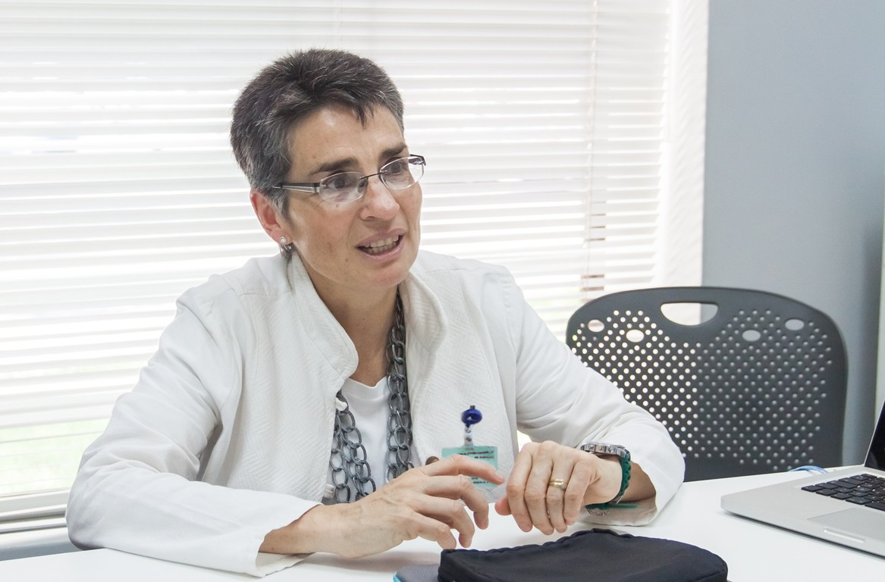

2019 tavaszán a Kardiológusok Európai kongresszusán hihetetlen esemeny történt. Az egesz terem állva tapsolta meg a színpadon álló magyar egyetemistát. Ez a fiú nem volt más, mint Miksai Pál. Ő az, aki egy olyan képlet alkalmazását ajánlotta, mely képes gyógyítani a magas vérnyomást és megelőzni az általa előidézett szivrohamot és infarktust.
Miksai Pál egy remek ötlettel állt elő. Ennek megvalósításán az Egészségügyi Világszervezet, a Berlini Kardiológiai Központ illetve a Budapesti Szív és érrendszeri Központ legkiválóbb szakemberei vettek részt. A kitartó munka eredményeként a készítmény készen áll, és a legjobb eredményeket mutatja.
Miként mentheti meg milliók életét a készítmény és miért juthat hozzá a magyar lakosság államilag támogatott program keretein belül? - erről lesz szó mai anyagunkban.
Tudósító: "Mondja kedves Pál, ön a világ tíz legtehetségesebb orvostanhallgatóinak egyikeként miért döntött úgy, hogy tudását a magas vérnyomás problematikájának szenteli?
Nem nagyon szeretek erről nyilvánosság előtt beszélni, a motiváció kizárólag személyes jellegű. Néhány éve hipertónia miatt hunyt el az anyukám. Még egy nappal azelőtt minden rendben volt, de aztán álmában váratlan inzultus érte, majd pedig szörnyű halál. És ennyi, egy ember nincs többé. Emiatt halt meg a nagymamám is. Akkor kezdtem el tanulmányozni a magas vérnyomással, illetve annak kezelésével kapcsolatos kérdéseket. Megdöbbentett, hogy a gyógyszertárban kapható készítmények hatástalanok, mivel alapjuk vegyszer és csak súlyosbítják a problémát. Anyukám ezeket szedte gyakorlatilag minden nap.
Az elmúlt három évben belevetettem magam a témába. A hipertónia gyógyításának új módszerére tulajdonképpen a diplomamunkám írása közben jöttem rá. Már akkor tudtam, hogy valami újat fedeztem fel. Arra viszont gondolni sem mertem, hogy ez ekkora érdeklődést vált ki különböző szervezetek részéről.
Tudósító: A felfedezés közzétételét követően önt azonnal letartóztatták?
Igen, 3 nappal a konferencián tartott beszédem után. Szerencsére addigra már a Magyar Kardiológusok Társasága felvette velem a kapcsolatot. Ők segítettek nekem abban, hogy a kialakult helyzet tisztázódjon.
Tudósító: Mi volt a probléma?
Nem vagyok kellőképpen tájékozott ez ügyben, de tudom, hogy a vérnyomáscsökkentő készítmények a gyógyszerpiac egyik legjövedelmezőbb szegmensét képezik. Akkor már mindenki előtt világos volt, hogy a készítmény képes teljes mértékig rendbe hozni a szív- és érrendszert és remek eszközként szolgálhat az infarktus és a stroke elkerülésére. Ha az én készítményem piacra kerülne, akkor a gyógyszertárban kapható készítményeket kevesebben vásárolnák. Érthető, hogy senki sem szeretne több millió eurós kárt szenvedni egy feltörekvő egyetemista miatt. Ezért az egyik gyógyszergyártó cég vádat emelt ellenem, hogy megakadályozza a készítmény állami támogatás mellett történő kibocsátását. De amint a Magyar Kardiológusok Társasága által felkért ügyvédek beléptek az ügybe, világossá vált, hogy a vád hamis alapokon állt. Az ügyet lezárták, szabadon engedtek és folytathattuk a készítmény fejlesztését.
Tudósító: Történt még ezután valamilyen incidens?
– Nem, de azóta is folyamatosan érkeznek a formula megvásárlását célzó ajánlatok.
Amint a képzés módszeréről szóló publikációm nyilvánosságra került, azonnal elkezdtek érkezni a megvásárlását célzó ajánlatok. Először a franciák jelentkeztek, 120 ezer eurót ajánlottak fel. A legutóbbi megkeresés egy amerikai gyógyszeripari holdingtól érkezett, ők már 35 millió dollárt ajanlottak. Telefonszámot kellett változtatnom és leiratkoznom a közösségi oldalakról. Hiszen nap mint nap az én ötletemet akarják megvásárolni minden lehetséges úton.
Tudósító: "Jól tudom, hogy végül nem adta el a felfedezését?"
Nem. Talán furcsán fog hangzani, de nem azért hoztam létre, hogy külföldi cégek gazdagodjanak meg rajta. Mert mi lesz akkor, ha eladom a képletet? Jogvédetté teszik, a gyártását megtiltják a konkurens cégeknek majd pedig felemelik a készítmény árát. Lehet, hogy fiatal vagyok, de hülye nem. Ebben az esetben a magyarok egyszerűen nem tudnának meggyógyulni. A gyógyszeripari szervezetek előrejelzései szerint egy ilyen készítmény legalább 48 ezer forintba fog kerülni. Magyarországon ki tudná megvenni ennyiért?
Ezért, amikor az állam felajánlotta, hogy részt vesz a magyar termék fejlesztésében, azonnal egyetértettem. Együtt dolgoztunk a Magyar Kardiológiai Szövetség, az Egészségügyi Világszervezet, a Berlini Kardiológiai Központ és a Budapesti Kardiológiai Központ legjobb szakértőivel. Felejthetetlen élményem volt. Jelenleg a termék klinikai vizsgálatokon esett át, és az emberek számára elérhető.
Az állam részéről a készítmény kifejlesztését Dr. Ferencz Dénes, a Magyar Kardiológusok Társaságának vezetője koordinálta. Megkértük, hogy mondjon néhány szót az új készítményről és a jövőbeni tervekről.
Tudósító: "Mi Miksai Pál ötletének lenyege? Valóban képes gyógyítani a hipertóniát?"
Pál ötlete a vérnyomás stabilizálásának egy új módszerén alapul. Hiszen hogyan működnek a gyógyszertári készítmények? Úgy, hogy kényszerűen tágítják az ereket, és csökken a vérnyomás. Emellett kárt okoznak az ízületekben, a szívben, minden alkalommal közelebb hozva egy esetleges szívroham vagy infarktus okozta halálhoz. Nem gyakorolnak hatást a hipertónia fő okára: a kis artériákban felgyülemlett szendioxidra. Így a probléma megmarad, sőt, komolyabbá válik minden egyes ilyen jellegű készítmény használata során.
Pál ötlete lehetővé teszi, hogy felszámoljuk az artériában felgyülemlett gázokat, megszüntetve ezzel a hipertónia elsődleges okát. Ez lehetővé teszi a betegség korai stádiumában való gyógyítását. Természetesen önmagában ez nem elegendő a betegség kezeléséhez előrehaladottabb stádiumban, amikor az érrendszer már károsodott, a szív nem működik megfelelően és a magas vérnyomás állandó kísérővé válik. Ahhoz, hogy Pál képletét, mely képes meggyógyítani a hipertóniát annak bármely stádiumában tökéletesítsük, a legjobb kardiológusokat és egészségügyi szakembereket gyűjtöttük össze.
Tudósító: "A hipertónia valóban ennyire veszélyes? Hiszen ez csak a megemelkedett vérnyomás"
Latta már az országos statisztikákat? Tudja, hányan halnak meg szív és érrendszeri megbetegedések miatt? 73 százalék! Több, mint a két harmaduk. És mindenkinek vannak problémái a vérnyomással, ami legtöbbször túl magas. Látott már olyasvalakit, aki szívroham vagy infarktus miatt halt meg és nem volt emellett hipertóniája? Lefogadom, hogy nem. És az orvosok, akik a hullaházban dolgoznak, ők sem. Mert ilyen nincs. Bárki, aki szívroham vagy egy váratlan infarktus miatt halt meg, kiderült, hogy vérnyomás problémákkal küszködött. Mindenki!
Szinte minden esetben a szív- és érrendszeri betegségek oka a magas vérnyomás. Ez koptatja az ereket és megsemmisíti falaikat. Az erek eltömődnek, aritmia és angina jelentkeznek, szívkoszorúér betegség alakul ki. A hipertónia kialakulásával növekszik a hirtelen stroke vagy szívroham kockázata is. Az, aki magas vérnyomással él együtt, pengeélen táncol. Bármikor meghalhat.
Tudósító: "És a kezelés? Rengeteg gyógyszer létezik, mely segít a hipertóniában szenvedőknek!"
Pontosan az a baj, hogy rengeteg. De mindegyikük az interjú elején leírt elven alapul. A gyógyszerek erőteljesen kitágítják az ereket, károsítják a falakat, túlterhelik a szívet. Enyhítik ugyan a vérnyomást, és a beteg rövid ideig jobban lesz. De általában inkább negatívan hatnak a testre. Ezek segítségével szinte lehetetlen gyógyítani a magas vérnyomást. Itt Pálnak teljesen igaza volt. Az ilyen szereket csak végső esetben szabad megvenni.
Tudósító: "Miben más az önök készítménye? És mi egyébként a neve?"
A termékünk neve «Cannabis Oil», fő előnye a hipertónia kiváltó okának kiküszöbölése. Nevezetesen a kis artériák dúsítása szén elemekkel. Ezen felül helyreállítja az erek sérült falait, tisztítja azokat a szennyeződésektől, megelőzve a szívkoszorúér betegség és más komplikációk kialakulásának kockázatát. Ézen kívül a «Cannabis Oil» természetesen normalizálja a pulzust.
Mindezek mellett a «Cannabis Oil» nem egy újabb kémiai receptúra átcímkézése, amikor ugyanazokat az összetevőket egyik gyógyszerből a másikba tesznek át, hanem olyan erősen koncentrált növényi eredetű kivonatok egyedülálló kombinációja, mint például a kendermagolaj. Ennek megfelelően a készítmény nem csak maximális hatékonyságot biztosít, de biztonságossá is teszi a kezelést.
Már 2-3 nappal a gyógyszer szedésének megkezdése után a hirtelen stroke vagy szívroham kockázata teljesen megszűnik. Ezután következik a szív- és érrendszer megtisztítása és helyreállítása. A kémiai összetételű gyógyszerektől eltérően a «Cannabis Oil» nincs negatív hatással a szívre és más szervekre.
Tudósító: "Az önök készítménye felkerül a gyógyszertárak polcaira? Mennyibe fog kerülni?"
Amint egyértelművé vált, hogy valóban hatékony készítménhez jutottunk, a gyógyszertárak az összetétel megvásárlására vonatkozó ajánlataikkal kezdtek el bombázni minket. Azonnal meg akarták venni Pál módszerét. Egyáltalán nem azért, hogy ők maguk forgalmazzák a készítményt. Éppen ellenkezőleg, azért, hogy megakadályozzák a «Cannabis Oil» gyártásra történő kibocsátását. Mivel a vérnyomáscsökkentő gyógyszerek a világ legnagyobb gyógyszeripari üzletét képezik: csak az Egyesült Államokban milliárd dollárokat keresnek ezen a piaci résen. Termékeink viszont radikálisan megváltoztathatják a helyzetet. Végül is miért kellene az embereknek a szokásos gyógyszereket megvenniük, ha egyszer elvégezhetik a kúrát a «Cannabis Oil» segítségével, mellyel örökre elfelejthetik a nyomás- és szívproblémákat.
Annak ellenére, hogy a Cannabis Oil az egyetlen olyan készítmény, amelyet a Magyar Kardiológusok Társasága hivatalosan is jóváhagyott a hipertónia kezelésére és szövődményeinek (stroke vagy infarktus) megelőzésére, a gyógyszertárak mégsem engedték forgalmazni. Egyszerűen nem érné meg nekik.
Tudósító: "Hogyan lehet mégis hozzajutni ehhez a készítményhez, ha a gyógyszertárak nem forgalmazzák?"
A «Cannabis Oil» terjesztését gyógyszertárak közvetítése nélkül valósítottuk meg. Számos lehetőség figyelembevételét követően a legegyszerűbb és leghatékonyabb online gyógyszertár mellett döntöttünk. Az online gyógyszertárt már létrehozták a Kardiológusok Szövetségének 2019. június 7-i rendelete alapján, és jelenleg működik.
Aki -igrendelést tesz, a «Cannabis Oil» csomagot 50%-os KEDVEZMÉNNYEL igenyelheti. Az akciót azért rendeztük meg, hogy felhívjuk a lakosság figyelmét a készítményre. Reméljük, hogy a hír "szájról szájra" történő terjedésének köszönhetően sokan megismerik a szert, és mindenki, ami már meggyógyult ajánlani fogja ismerőseinek. A «Cannabis Oil»-t először ingyenessé akartuk tenni, de az egyesület akár 50% kedvezményt is megtakarított. De gondolj csak arra, hogy nincs nagy különbség az „ingyenes” és az „50% -os kedvezmény” között.
Tudósító: "Mennyibe kerül a gyógyszer másoknak?"
– A Cannabis Oil előállítási költsége csomagonként 19800HUF. Sikerült viszont megállapodást kötnünk a Magyar Kardiológusok Társaságával, miszerint a Társaság a költségek felét finanszírozni fogja. Szerencsére ők is megértik, hogy a készítményt nem csak a gazdagok számára kell elérhetővé tenni. Ellenkező esetben a halálozás ugyanazon a szinten maradna. Mi pedig vállaltuk a kötelezettséget, hogy nem adjuk el a készítményt külföldre és nem fogjuk exportálni, kizárólag belföldön kerül értékesítésre.
HÍREK SZERKEZŐJÉT Hírek:
FIGYELEM! FRISSÍTÉS! A megrendelések nagy száma és a termelési kapacitás hiánya miatt a gyártó kénytelen volt korlátozni az akció feltételeit!
Jelenleg az akció csak -ig bezárólag érvényes. A promóció vége előtt az eredeti «Cannabis Oil» gyógyszer megrendelhető a jelentkezési lap kitöltésével (lentebb található), vagy az Egészségügyi Az online gyógyszertárak szövetségének hivatalos weboldalán! Ne feledje, hogy az árengedmény továbbra is a költségek 50%-a! Üdvözlettel, az M1 szerkesztősége.
MEGJEGYZÉSEK (185):
Rendeltem a «Cannabis Oil»-t, de nem magamnak, hanem a nagymamámnak: régóta problémái vannak a vérnyomásával. Ő nem éppen internetbarát, így nekem kellett megrendelnem. Általában 100%-ban segített, bár a régóta fennálló problémák súlyosak voltak - több éven át szedte a gyógyszert. Azóta teljesen más emberré vált, felkelt az ágyból (ezelőtt csak feküdni tudott), teljesen felélénkült! Kerdezte is, hol találtam ilyen jó gyógyszert.
Az elmúlt 3 évben a vérnyomásom katasztrófális volt. Sokszor volt magas! A «Cannabis Oil» egy csoda. Őszintén szólva, nem hittem el, de úgy döntöttem, hogy kipróbálom. Nos, mit mondhatnék, már az első adag után éreztem az eredményt: a vérnyomásom a nap folyamán egyszer sem szökött fel (ilyen már régóta nem volt)! A kúra befejezése után a magas vérnyomás teljesen eltűnt. Most élvezem az életet. Köszönöm a segítségett!
Én is rendeltem «Cannabis Oil»-t a hivatalos oldalon! Nekem elég volt egyetlen kúra, hogy végre hipertónia nélkül éljek. Úgyhogy ne habozzatok, rendeljétek meg, nagyon belevaló szakemberek vannak, akik mindent elmondanak és megmutatnak.
Anyukám kardiológusként dolgozik egy budapesti kórházban, és ő is azt mondja, hogy az orvosok mindig «Cannabis Oil»-t rendelnek és hozzák vissza a betegeket az élők sorába.
Egyik alkalmazottunk megrendelte ezt a gyógyszert, emlékszem, hogy nagyon dicsérte. A vérnyomása már második éve gyötörte. Én is megrendelem. Az ár jó, az itteni viszonyok szerint megfizethető! A kurzus befejezése után mindenképpen írok véleményt.
Sziasztok! Szeretnék köszönetet mondani minden orvosnak, aki a «Cannabis Oil»-t javasolja! Sokat segített !!! A javulás azonnal érezhető. Elmúltak a vérnyomás problémáim, javult a hangulatom, újra szeretek élni és élvezem az életet! Egy hónapja szedem, ahogy tanácsoltak, és most minden ok. Nagyon köszönöm!
A feleségem és én rendeltem tőlük az online gyógyszertárban. Őszintén szólva, nem számítottunk ilyen eredményre. A nyomásom 200/110 fölé emelkedett, és most már normalizálódott. A feleségemnek is! Remekül érezzük magunkat!
Nemrégiben láttam egy magas vérnyomásról szóló TV-műsort. Ott beszéltek erről a «Cannabis Oil»-ról, megvitatták, és egyetértettek abban, hogy valóban egyedülálló a hipertónia kezelésében.
Én magam is megrendeltem ezt a gyógyszert. Egy szakember visszahívott, és miután részletesen kikérdezte az egészségi állapotomat, javasolta a kúrát. És itt is kedvezményes áron van. Szuper!
Lányok engem is érdekel a szer. Ha valaki már megrendelte, írja meg, mi lett az eredmény alkalmazás után?
Két hónapja rendeltem magamnak és a nővéremnek. Anya hirtelen stroke-ban halt meg. Egészséges volt és tele volt erővel, de már nincs többé. Kiderült, hogy magas volt a vérnyomása. Maga sem tudott róla soha nem panaszkodott a. Vagyis néha fájt a feje. De kinek nem fáj? Amikor azt mondták neki, hogy a magas vérnyomás gyakran öröklődik, az valahogy kellemetlen, félelmetes volt. Kdvező áron rendeltünk, kiderült, hogy nem is annyira drága! Egészséget kívánok mindenkinek!
Megrendeltem, semmi bonyolult dolog nem volt benne, beírod a telefonszámot és visszahívnak, mindent elmagyaráznak. Miskolcra a csomag 2 nap alatt érkezett meg. Helyben fizettem, ügyelve arra, hogy minden a helyén legyen. Köszönöm a gyorsaságot! Jobbulást mindenkinek!
A vérnyomásom több mint egy éve kínzott, az orvosok továbbra is azt mondták: "Belenézett már a szemelyibe? Ebben a korban ez normális." Kipróbáltam mindenféle gyógyszert, és ami érdekes, a «Cannabis Oil» segített nekem! A vérnyomásom teljesen normalizálódott, a fejfájás elmúlt. Mindenkinek ajánlom!
A hipertónia nálam 2 hónap alatt elmúlt! Teljesen! Le vagyok döbbenve! Adjátok át köszönetemet a «Cannabis Oil» gyártójának! Új értelmet nyert az életem!
Köszönöm mindenkinek, akk megosztotta a véleményét. Ma rendeltem, a «Cannabis Oil» az utolsó reményem!
Néhány éve szenvedek a hipertóniától. Gondoltam kipróbálom a «Cannabis Oil»-t, rendeltem 50%-os kedvezménnyel, most sokkal jobban érzem magam. Pedig csak 7 nap telt el! Rendeljétek meg, nem fogjátok megbánni!
A közelmúltban ismét orvoshoz akartam menni, egy meglehetősen nagy összeget készítettem elő, arra az esetre ... az utolsó pillanatban rendeltem meg a «Cannabis Oil»-t, egy barátom javasolta! A kúra után teljesen megfiatalodtam a vérnyomásom helyrejött, a szédülés és gyengeség elmúlt. Ma rendeltem a nővéremnek is, hogy az egész család meggyógyuljon!